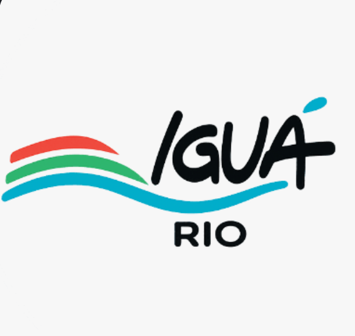
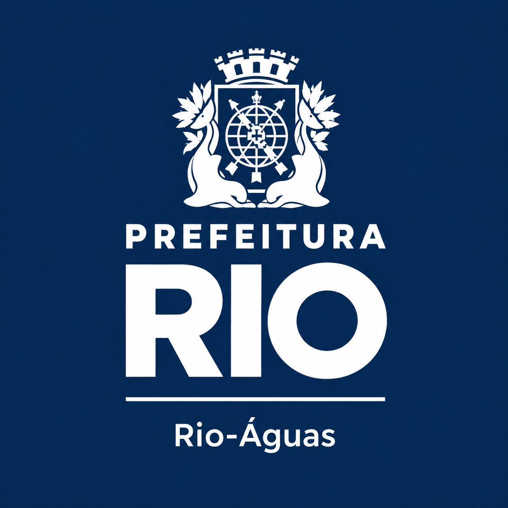

Karatê
Esgoto e drenagem
11 chamados ativosCanal direto entre moradores, Iguá Rio e Prefeitura/Rio-Águas para esgoto, vazamentos, alagamentos e entulho.
| Protocolo | Tipo | Descrição | Local | Gravidade | Status | Registro |
|---|---|---|---|---|---|---|
| CDD-2026-0412 | Esgoto | Esgoto transbordando na altura da Praça Seca, com mau cheiro e risco para pedestres | Rua Edgar Werneck | Alta | Em análise | 04/10 |
| CDD-2026-0411 | Alagamento | Bueiro entupido gerando acúmulo de água após a chuva | Caminho do Itanhangá | Alta | Em andamento | 03/10 |
| CDD-2026-0410 | Vazamento | Vazamento na tubulação principal, água correndo pela via há dias | Rua Cuiabá | Média | Em análise | 03/10 |
| CDD-2026-0409 | Entulho | Entulho de obra bloqueando a vala de drenagem | Gabinal | Média | Em andamento | 02/10 |
| CDD-2026-0408 | Esgoto | Caixa de inspeção sem tampa e esgoto aflorando na calçada | Karatê | Alta | Em análise | 01/10 |
| CDD-2026-0407 | Alagamento | Galeria de águas pluviais assoreada, desobstruída pela equipe | Apês | Baixa | Resolvido | 30/09 |
| CDD-2026-0406 | Vazamento | Cavalete com vazamento em frente a residência, reparo concluído | Rua Edgar Werneck | Baixa | Resolvido | 29/09 |
| CDD-2026-0405 | Entulho | Lixo acumulado em vala, atraindo vetores; recolhimento realizado | Rua Cuiabá | Média | Resolvido | 27/09 |
| Nenhuma ocorrência encontrada para os filtros aplicados. | ||||||
* Dados simulados para fins de protótipo acadêmico.
Esgoto e drenagem
11 chamados ativosVazamentos e esgoto
9 chamados ativosDrenagem e entulho
8 chamados ativosEsgoto e vazamentos
7 chamados ativosAlagamento e bueiros
6 chamados ativosVazamentos e valas
6 chamados ativos* Localidades e números ilustrativos, simulados para o protótipo.

Concessionária de água e esgoto. Recebe e trata os chamados de vazamento, rede entupida e esgoto.

Responsável pela drenagem urbana. Atua em bueiros, galerias, valas e pontos de alagamento.
Coordena limpeza urbana e a articulação entre os órgãos para resolver cada ocorrência.
* Prototipação acadêmica: indicadores simulados; as parcerias representam os atores previstos no projeto.
Acesse "Relatar problema", escolha o tipo, descreva a situação, anexe uma foto e indique o local. Ao final, você recebe um número de protocolo.
Não. O relato é aberto e o acompanhamento é feito apenas pelo número do protocolo.
Digite o protocolo em "Consultar protocolo". A linha do tempo mostra cada etapa: recebido, em análise, em andamento e resolvido.
Os relatos chegam ao painel de gestão, onde Iguá Rio e Prefeitura/Rio-Águas priorizam por gravidade e atualizam o status.
Para risco imediato (rede rompida com perigo, alagamento com pessoas em risco), ligue para a Defesa Civil (199) ou o Corpo de Bombeiros (193). A plataforma não substitui o atendimento de emergência.